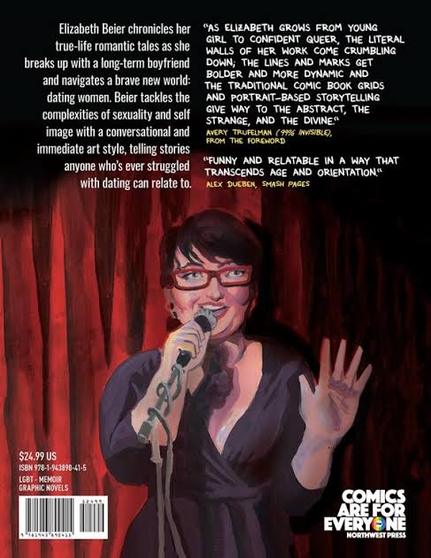
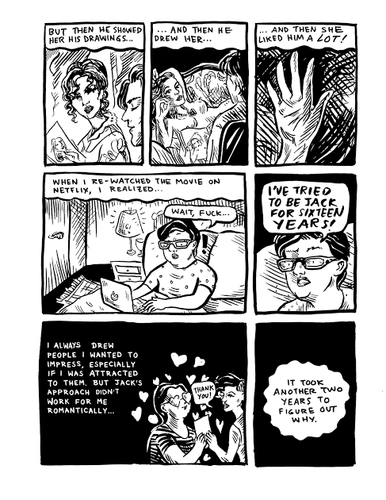
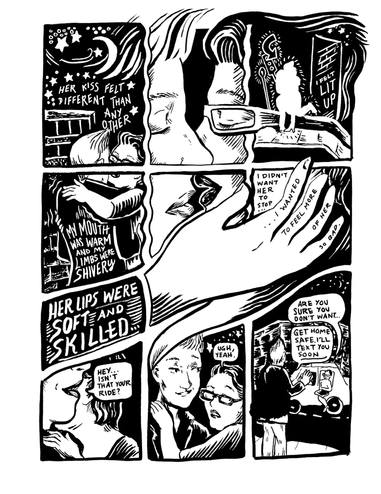
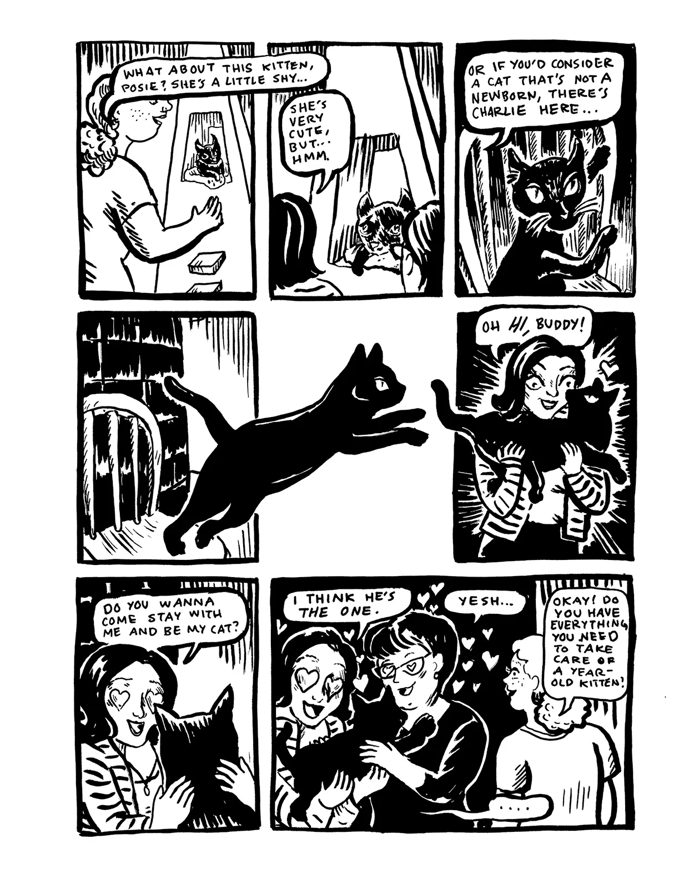
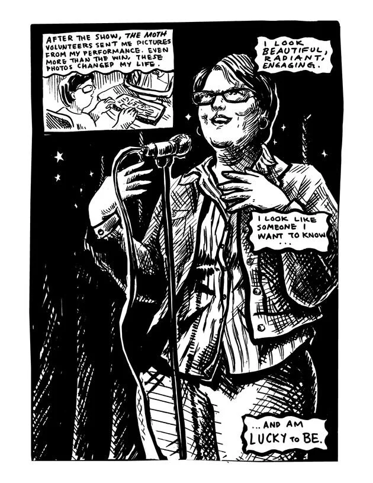
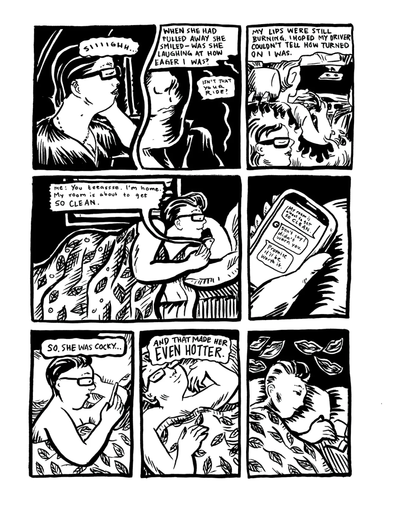
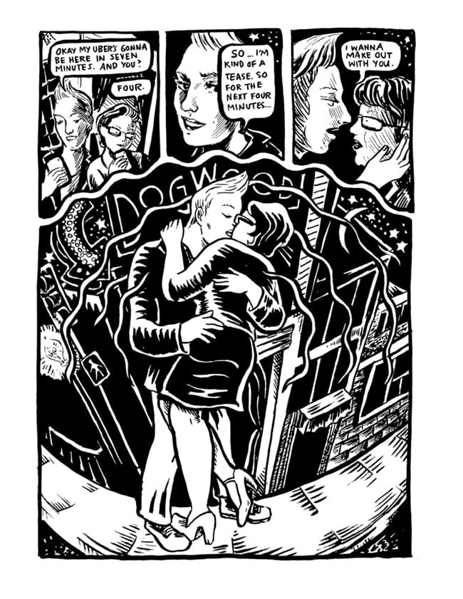
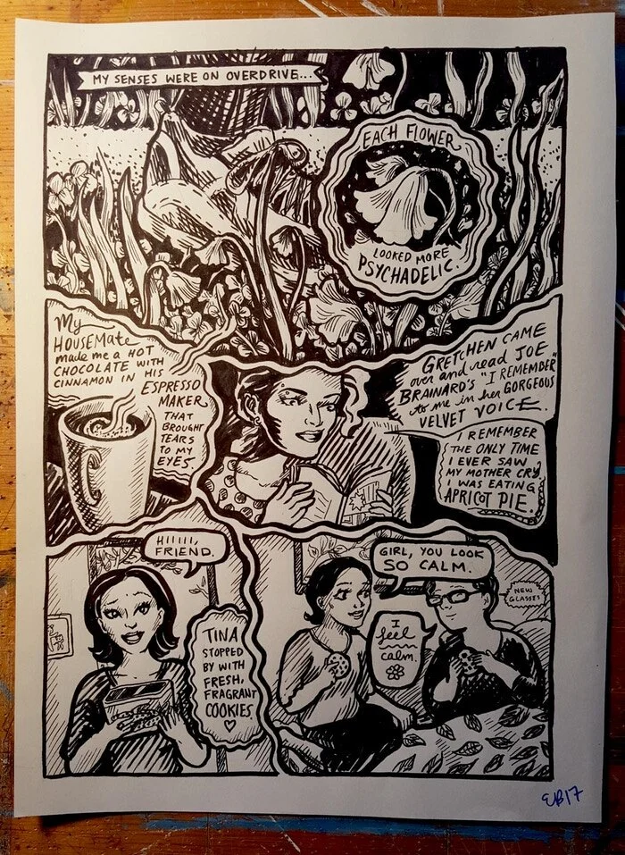

The Big Book of Bisexual Trials and Errors
Northwest Press·October 2017216 pages · foreword by Avery Trufelman · named one of the best LGBT graphic novels of 2017 by The Advocate
Written and illustrated by Elizabeth Beier
A graphic memoir, published and reviewed. Buy it, or read the reviews below.


Inside the book







What the reviews said
- “Beier has an acute eye for people and their stories, and it’s not surprising that she’s a Moth StorySLAM winner.”Lambda Literary Cathy Camper, 7 January 2018
- “It is always rewarding to follow a cartoonist’s artistic trajectory as captured in a collection like this.”The Comics Journal Robert Kirby, 31 January 2018
- “This raw chronicle is a dispatch from the front lines of modern app-assisted dating.”Publishers Weekly 8 January 2018
- “This is a definite recommendation if you’re a fan of Lucy Knisley or Ellen Forney, and Beier is a cartoonist to keep an eye on.”Bleeding Cool Greg Baldino, 16 December 2017
- “When Beier flies, she soars. A fantastic first book and here’s hoping that she’ll soar even farther now that she appreciates her own wings.”Okazu Erica Friedman, 11 December 2017 · overall 8
- “The stories by Beier are funny, sad, beautiful, and intriguing. The art by Beier could be museum paintings.”Graphic Policy 18 November 2017 · 10 out of 10
- “The artwork clearly comes from a very personal place and lets readers feel right at home in the story.”ComicsVerse Kelsey McConnell, 28 October 2017 · 99 percent
More reviews ran at Book Riot, Smash Pages, Comicosity, Bisexual Books, Sequential Tart, Pixel Pop Network, What A Nerd and the Gay Entertainment Directory. Back to all work →